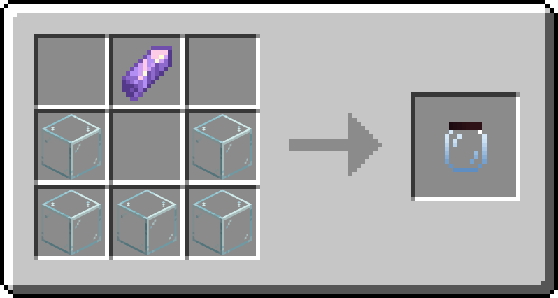

Ultra Warp Ride¶
The Ultra Warp Ride is the one from Ultra Sun & Ultra Moon. You fly down a tunnel through Ultra Space and pick a wormhole to fly into.
What You Need¶
You need a Solgaleo, Lunala, Dusk Mane Necrozma or Dawn Wings Necrozma that you own. The mod makes Solgaleo and Lunala rideable and lets them fly. Plain Necrozma and Ultra Necrozma can't open wormholes.
You also have to be riding it and flying. That means in the air, with some air below you, and not touching the ground or water.
Server owners can change which mounts are allowed in config/hyperspace_wormholes.json. You can learn more about that
here.
Opening A Wormhole¶
- Get on your legend and fly up into the air.
- Press V (the "Open Wormhole" key under "Cobblemon: Hyperspace & Wormholes" in Controls). Your legend roars and a wormhole opens about 14 blocks ahead of you.
- Fly straight into it. It only lasts 10 seconds and takes one rider.
Players riding on your legend with you come along too. Your first ride gives the Ride Of Your Life advancement.
You can roar again after 7.5 seconds. Once you've started a ride though, you have to wait 2.5 minutes (counted from the start of that ride) before the next one. Until then you'll see "You can travel through a wormhole again in ...". Roaring doesn't work in Hyperspace ("... tried to open a wormhole, but failed.").
Flying The Tunnel¶
Once you're in, you steer around the tunnel with W, A, S and D. "Ultra Space Travelled" shows how far you've flown in light-years.
The stamina bar has 18 sections and one drains every 5 seconds. When it runs out, your legend gets dragged into the next wormhole. Fly through the golden rings to refill a section and get a short speed boost. Each ring also makes you 3% faster for the rest of the ride, but stamina drains 3% faster too.
Wormholes come up about every 210 light-years. Fly into the one you want. The screen goes white and you come out where it leads.
Wormhole Colours¶
By default the wormholes use the game's colours:
| Colour | Leads to | First appears |
|---|---|---|
| Red | Ultra Space Wilds: Cliff World | from the start |
| Green | Ultra Space Wilds: Crag World (Rocky World) | from the start |
| Yellow | Ultra Space Wilds: Cave World | from the start |
| Blue | Ultra Space Wilds: Water World | from the start |
| Purple | The sky above a structure in your world | after 2,000 light-years |
| White | An Ultra Beast world | after 4,500 light-years |
Red, green, yellow and blue are a quarter each of the regular wormholes. Once purple can appear, it's about 10% of the non-white wormholes. White gets more likely the further you fly: 12.5% up to 10,000 light-years, 25% up to 20,000, 37.5% up to 30,000 and 50% after that.
You can learn more about what's past each colour here. If you have Waystones installed, giving your legend a Warp Stone changes the tunnel so it can fly you to your waystones. You can learn more about that here.
Rings¶
Wormholes can have 0 to 3 golden rings around them. More rings mean better odds past them. Rings only start showing up after 1,000 light-years:
| Light-years flown | 0 rings | 1 ring | 2 rings | 3 rings |
|---|---|---|---|---|
| under 1,000 | 100% | - | - | - |
| 1,000-1,499 | 78% | 20% | 2% | - |
| 1,500-1,999 | 66% | 30% | 4% | - |
| 2,000-2,499 | 52% | 40% | 8% | - |
| 2,500-2,999 | 33% | 50% | 16% | 1% |
| 3,000-3,499 | 32% | 50% | 16% | 2% |
| 3,500-3,999 | 31% | 50% | 16% | 3% |
| 4,000-4,499 | 30% | 50% | 16% | 4% |
| 4,500 and up | 29% | 50% | 16% | 5% |
Server owners can change how often each ring count shows up in the settings file (wormholeRingWeights). Going into a
3-ring wormhole gives the Maximum Rings advancement.
Cosmic Jar¶
The Cosmic Jar is how you get Cosmog. You fill it with cosmic energy as you travel, then use it in the Item Analyser.
Craft an Empty Jar on a crafting table (shaped):

If you have a jar that isn't full anywhere in your inventory, there's a 10% chance to add 1 cosmic energy to it. This happens each time you start a ride, come out of a wormhole, come home or summon something with the Item Analyser. The jar holds 4. It starts as an Empty Jar, then it's a Partially Filled Jar, and once it's full it's a Jar of Cosmic Energy (it shines).
Once it's full, put it in the Item Analyser with a Golden Apple to summon Cosmog.
Getting Unstuck¶
If you get stuck on a ride, /wormhole unstuck ends it and takes you back on foot to where it started. Your mount goes
back in its ball. It only works during a ride.